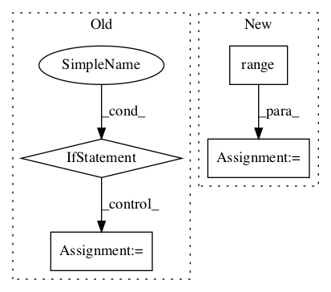

1a292afa66250814e3fa3fab26e4f7e5140baf31,contents/12_Proximal_Policy_Optimization/simply_PPO.py,PPO,update,#PPO#Any#Any#Any#Any#Any#,80

Before Change
[self.sess.run(self.ctrain_op, {self.tfs: s, self.tfdc_r: r}) for _ in range(b)]
// adaptive lambda
if kl < self.kl_target / 1.5:
self.lam /= 2
elif kl > self.kl_target * 1.5:
self.lam *= 2
self.lam = np.clip(self.lam, 1e-4, 10)
def _build_anet(self, name, trainable):
with tf.variable_scope(name):
After Change
METHOD["lam"] *= 2
METHOD["lam"] = np.clip(self.lam, 1e-4, 10)
else: // clipping method
[self.sess.run(self.atrain_op, {self.tfs: s, self.tfa: a, self.tfadv: adv}) for _ in range(m)]
// update critic
[self.sess.run(self.ctrain_op, {self.tfs: s, self.tfdc_r: r}) for _ in range(b)]
In pattern: SUPERPATTERN
Frequency: 3
Non-data size: 4
Instances
Project Name: MorvanZhou/Reinforcement-learning-with-tensorflow
Commit Name: 1a292afa66250814e3fa3fab26e4f7e5140baf31
Time:
Author: null
File Name: contents/12_Proximal_Policy_Optimization/simply_PPO.py
Class Name: PPO
Method Name: update
Project Name: deepchem/deepchem
Commit Name: b68db1aaf6abe4d2cea8321cc6f1564228dd60f5
Time:
Author: null
File Name: deepchem/models/keras_model.py
Class Name: KerasModel
Method Name: _predict
Project Name: openai/baselines
Commit Name: b71152eea0470ac2629c33e0fc66a54fe494949f
Time:
Author: null
File Name: baselines/common/vec_env/dummy_vec_env.py
Class Name: DummyVecEnv
Method Name: step_wait